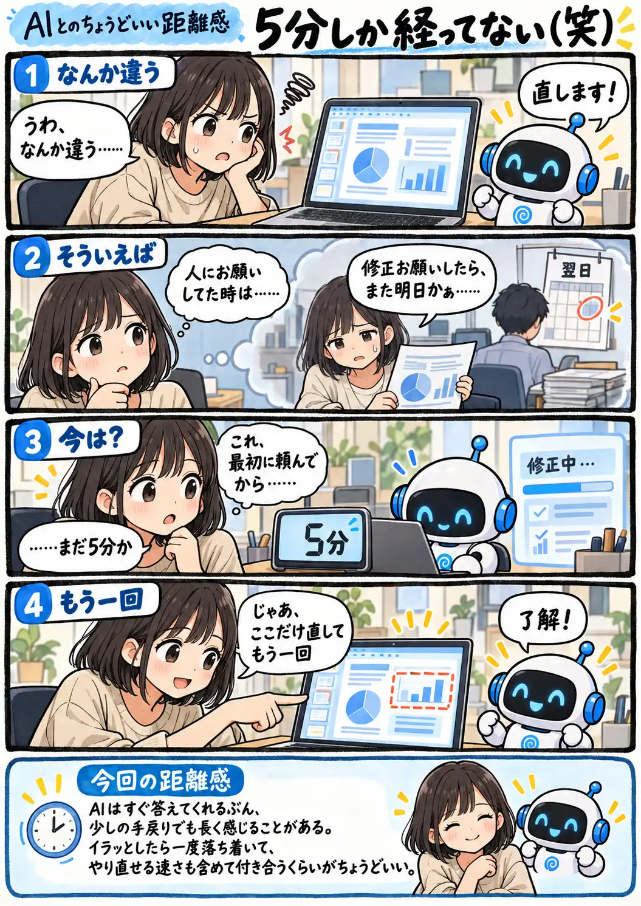

#156
5分しか経ってない（笑）
AIが速くなったら、こっちまで待てなくなった

メモ
人に仕事をお願いしていた頃なら、翌日に届いたものへ修正を頼めば、さらに時間がかかるのは当たり前でした。それがAIなら、最初の案も修正版も数分で返ってきます。
なのに、その数分の中で一度ズレるだけで妙にイライラすることがあります。AIが速くなったぶん、こちらの期待する速度まで上がっているのかもしれません。ズレた時ほど一度時計を見て、まだやり直せると思えるくらいが楽です（笑）
今回の距離感
AIはすぐ答えてくれるぶん、少しの手戻りでも長く感じることがある。イラッとしたら一度落ち着いて、やり直せる速さも含めて付き合うくらいがちょうどいい。